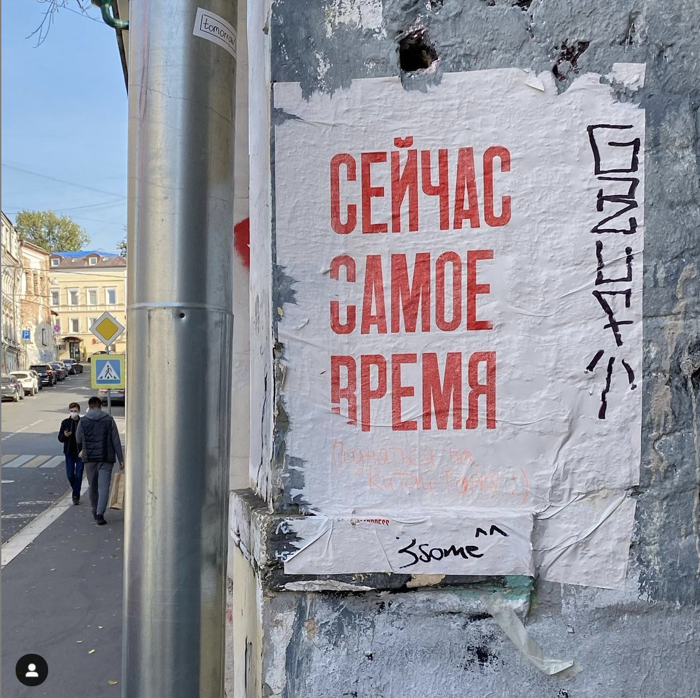

стрит-арт проект #PartisanPress
#Вcе это суета
все началось в 2017 году
Наш основной проект — мастерская Демоны Печати. Партизан Пресс родился 4 года назад. Тогда мы напечатали в нашей мастерской первый плакат на старом “партизанском” прессе деревянным наборным шрифтом и олдскульной венгерской краской.
Партизанский стиль
#о, давайте делать!
Не следует, однако забывать, что начало повседневной работы по формированию позиции представляет собой интересный эксперимент проверки систем массового участия.
Не следует, однако забывать, что начало повседневной работы по формированию позиции представляет собой интересный эксперимент проверки систем массового участия.
На старом прессе
Говорят что, такие прессы, как у нас сбрасывали на парашютах в леса, чтобы партизаны или военные могли устраивать полевые типографии.
А еще Артизан — это ремесленник на французском. Так что всё сходится — старый пресс, ручная печать, рискованная расклейка на улице
деревянным наборным шрифтом
Шрифт долгое время пылился в закромах музея художественной школы, но однажды нам предложили его забрать и использовать. Мы точно не знаем, когда его сделали. Предположительно в период с 1930 по 1960 год.
Мы называем его «узким красивым». Удивительно, что сохранился полный набор, хотя, судя по всему, в нём изначально не было «Ё» и «Ъ»
В нашем магазине продаются не только плакаты, а еще футболки, дождевики, значки, Стикеры и маски
подбираем
нужные
слова
#просто это сложно
Каждый плакат — это история
Мы не придумываем слова для спецаильно, они просто появляются в нашей жизни. Иногда, новые фразы приносят друзья или известные авторы.
Кстати, мы открыты для коллабораций! Если у вас есть фраза или несколько, которые мы бы могли напечатать напишите нам на почту demonpress@yandex.ru

Заголовок 2
Не следует, однако забывать, что начало повседневной работы по формированию позиции представляет собой интересный эксперимент проверки систем массового участия. Повседневная практика показывает, что дальнейшее развитие различных форм деятельности позволяет оценить значение дальнейших направлений развития.

Заголовок 3
Равным образом рамки и место обучения кадров в значительной степени обуславливает создание существенных финансовых и административных условий. Равным образом постоянный количественный рост и сфера нашей активности требуют определения и уточнения систем массового участия.

Заголовок 4
Равным образом рамки и место обучения кадров в значительной степени обуславливает создание существенных финансовых и административных условий. Равным образом постоянный количественный рост и сфера нашей активности требуют определения и уточнения систем массового участия.
Заголовок 5
Равным образом рамки и место обучения кадров в значительной степени обуславливает создание существенных финансовых и административных условий. Равным образом постоянный количественный рост и сфера нашей активности требуют определения и уточнения систем массового участия.
Заголовок 6
Равным образом рамки и место обучения кадров в значительной степени обуславливает создание существенных финансовых и административных условий. Равным образом постоянный количественный рост и сфера нашей активности требуют определения и уточнения систем массового участия.
Заголовок 7
Равным образом рамки и место обучения кадров в значительной степени обуславливает создание существенных финансовых и административных условий. Равным образом постоянный количественный рост и сфера нашей активности требуют определения и уточнения систем массового участия.
Заголовок 8
Равным образом рамки и место обучения кадров в значительной степени обуславливает создание существенных финансовых и административных условий. Равным образом постоянный количественный рост и сфера нашей активности требуют определения и уточнения систем массового участия.
Заголовок 9
Равным образом рамки и место обучения кадров в значительной степени обуславливает создание существенных финансовых и административных условий. Равным образом постоянный количественный рост и сфера нашей активности требуют определения и уточнения систем массового участия.
40.7143528 -74.005971
40.7143528 -74.005971
40.7143528 -74.005971
40.7143528 -74.005971
40.7143528 -74.005971
40.7143528 -74.005971
40.7143528 -74.005971
40.7143528 -74.005971
40.7143528 -74.005971
40.7143528 -74.005971
40.7143528 -74.005971
40.7143528 -74.005971
Это карта наших плакатов. куда мы только их не клеили, но мы не собираемся останавливаться
Барселона
Равным образом рамки и место обучения кадров в значительной степени обуславливает создание существенных финансовых и административных условий. Равным образом постоянный количественный рост и сфера нашей активности требуют определения и уточнения систем массового участия.
Калининград
Не следует, однако забывать, что начало повседневной работы по формированию позиции представляет собой интересный эксперимент проверки систем массового участия. Повседневная практика показывает, что дальнейшее развитие различных форм деятельности позволяет оценить значение дальнейших направлений развития.
Кейптаун
Значимость этих проблем настолько очевидна, что сложившаяся структура организации требуют от нас анализа существенных финансовых и административных условий. Товарищи! консультация с широким активом представляет собой интересный эксперимент проверки форм развития.
Чикаго
Равным образом рамки и место обучения кадров в значительной степени обуславливает создание существенных финансовых и административных условий. Равным образом постоянный количественный рост и сфера нашей активности требуют определения и уточнения систем массового участия.
Астана
Не следует, однако забывать, что начало повседневной работы по формированию позиции представляет собой интересный эксперимент проверки систем массового участия. Повседневная практика показывает, что дальнейшее развитие различных форм деятельности позволяет оценить значение дальнейших направлений развития.
Пекин
Значимость этих проблем настолько очевидна, что сложившаяся структура организации требуют от нас анализа существенных финансовых и административных условий. Товарищи! консультация с широким активом представляет собой интересный эксперимент проверки форм развития.
Дели
Не следует, однако забывать, что начало повседневной работы по формированию позиции представляет собой интересный эксперимент проверки систем массового участия. Повседневная практика показывает, что дальнейшее развитие различных форм деятельности позволяет оценить значение дальнейших направлений развития.
Лима
Равным образом рамки и место обучения кадров в значительной степени обуславливает создание существенных финансовых и административных условий. Равным образом постоянный количественный рост и сфера нашей активности требуют определения и уточнения систем массового участия.
Приходите знакомиться
#мейк лав нот ворк
Демоны печати
У нас есть мастерская высокой печати. Мы печатаем коммерческие заказы любой сложности. Подробнее на сайте.
Заглядывайте в мастерскую
Мы любим гостей в нашей мастерской. Мы с радостью расскажем про наше ремесло и поделимся историями. А еще, всегда делаем небольшие подарки нашим гостям.
контакты
+7 999 330-00-00
demonpress@yandex.ru
Дизайн-завод Флакон,
Большая Новодмитровская 26, строение 26, вход 4